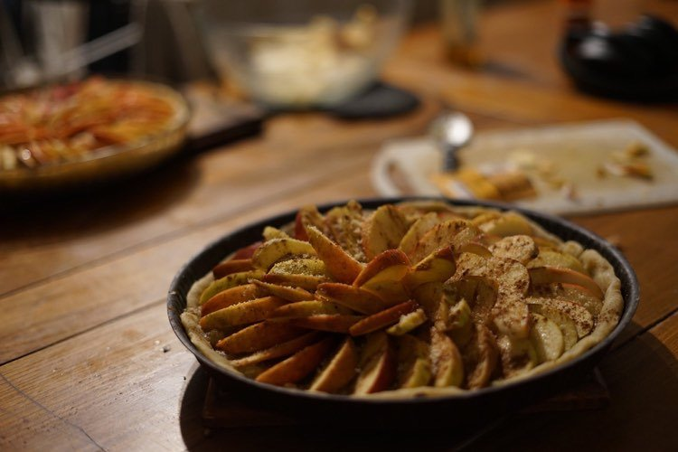
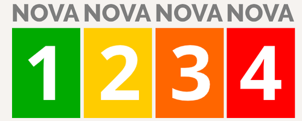
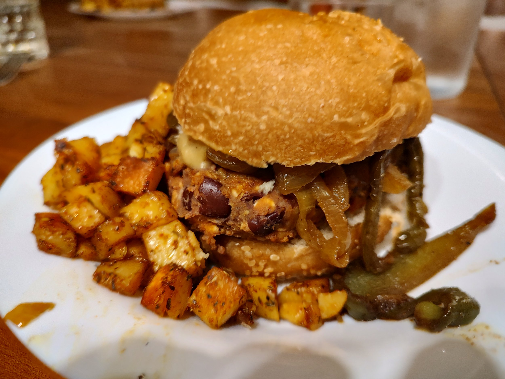
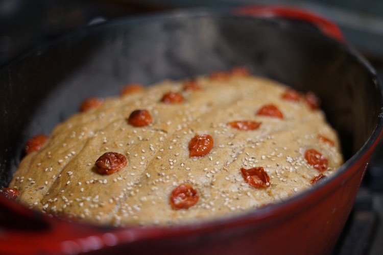

Alimentation sur le lieu
Au Mallouestan, nous cherchons à créer un lieu sain. Cela implique donc une attention particulière à notre mode de vie et, de fait, nos besoins essentiels. Ainsi, la question de ce que nous devrions manger, ou non, sur le lieu est naturellement devenu un sujet central au sein du collectif. Les aspects relatifs à l’éthique, l’environnement, l’autonomie ou la santé sont tant de critères que nous souhaitons prendre en compte pour répondre à cette question.

Véganisme
Pour des soucis éthiques et environnementaux, nous refusons, sur le lieu, la consommation et la présence de produits d’origine animale ou nécéssitant l’exploitation d’animaux comme :
Le lait, le fromage, la viande, les oeufs, le miel…
Les produits peu transformés
Pour des raisons de santé, de préoccupation environnementale et d’indépendance nous cherchons à minimiser la consommation de produits très transformés. Nous avons donc décidé, dans les espaces et événements communs, de ne plus accepter les produits ultra-transformés et les produits transformés dangereux pour la santé.
Évaluer le niveau de transformation Nous utilisons la base de données OpenFoodFacts pour déterminer la qualité des rares produits que nous achetons. Une application mobile permet de scanner les code-barres. Nous avons choisi les deux indicateurs suivants fournis par cette base de données:
-
- Le groupe Nova
-
- Le nutriscore

Nova 1 - Aliments non-transformés ou transformés minimalement Nova 2 - Ingrédients culinaires (huile, sucre, sel, épices…) Nova 3 - Aliments transformés Nova 4 - Produits alimentaires et boissons ultra-transformés
Dans les espaces et événements communs, nous ne tolérons aucun aliment du groupe Nova 4 ni les aliments du groupe Nova 3 ayant un nutriscore de D ou E. Ces critères sont loin d’être parfaits mais définissent un cadre commun en éliminant une majorité de produits toxiques, sur-emballés et dangereux.
Si à ce stade tu penses que nous ne mangeons que de l’herbe ou des graines, la suite devrait te rassurer.



Si tu as des questions ou des appréhensions, tu peux nous contacter par mail, téléphone ou en personne sur le lieu.

{kind=link}